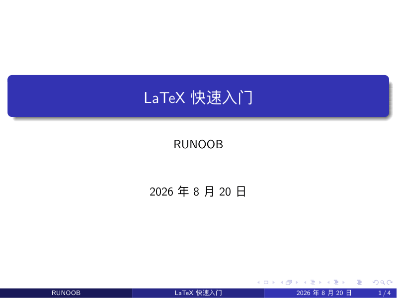
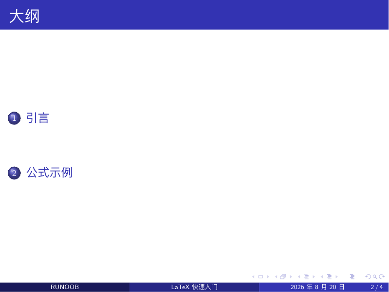
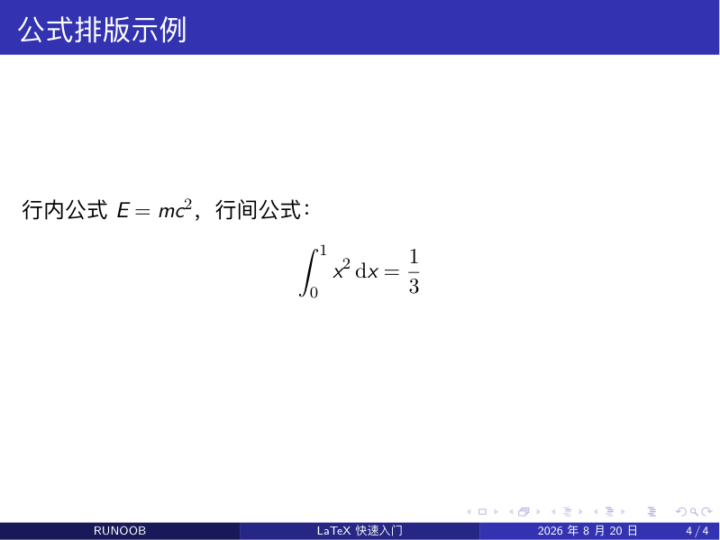
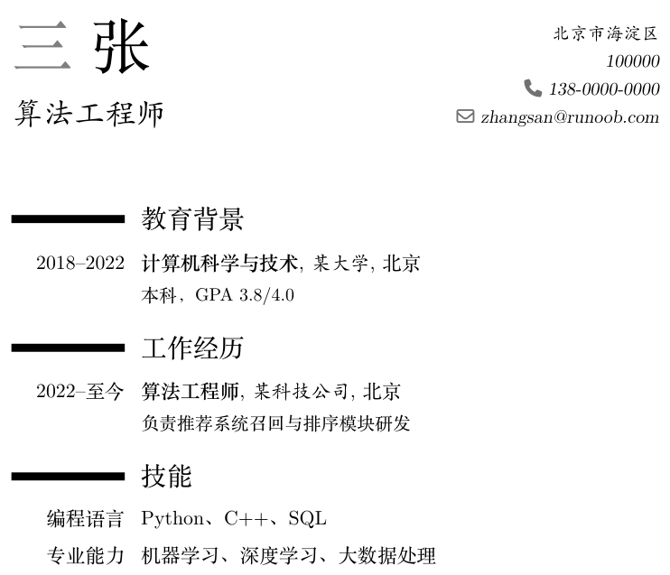

LaTeX Beamer プレゼンテーションと履歴書テンプレート
この章では、LaTeX の2つの高頻度な「完成形態」である、学術スライドの Beamer と、moderncv テンプレートを使った履歴書の組版を紹介します。
Beamer：学術スライドの標準ツール
Beamer は LaTeX のスライド用ドキュメントクラスで、数学・コンピュータ分野の学術発表における主流ツールです。Beamer が生成する数式スライドは、PPT ではなかなか到達できない品質です。
中核となる概念はただ一つ、frame（フレーム）です。1つの frame が1ページのスライドに相当し、その他の構文は、これまでの11回で学んだ LaTeX と完全に同じです。
実例：最初の中国語スライド
\usetheme{Madrid} % テーマ：配色、ヘッダー・フッター、レイアウトを決定
\title{LaTeX クイックスタート}
\author{サンプル}
\date{\today}
\begin{document}
\begin{frame} % 表紙ページ
\titlepage
\end{frame}
\begin{frame}{アウトライン} % 中括弧内の文字がそのページのタイトル
\tableofcontents
\end{frame}
\section{はじめに}
\begin{frame}{なぜ LaTeX を使うのか}
\begin{itemize}
\item数式の組版品質が高い
\item番号付け、目次、引用がすべて自動
\pause % 放映時は最初の2つを表示し、キー操作後にこの項目が表示される
\item長い文書でも書式が統一される
\end{itemize}
\end{frame}
\section{数式の例}
\begin{frame}{数式組版の例}
インライン数式$E = mc^2$、別行立て数式：
\[
\int_0^1 x^2 \,\mathrm{d}x = \frac{1}{3}
\]
\end{frame}
\end{document}
コンパイルすると 16:9 の PDF が得られ、全画面で放映するだけです。いくつかの重要な効果：
表紙ページ（Madrid テーマには下部ナビゲーションバーが付属）：

アウトラインページ（\tableofcontents がすべての \section を自動的に集約し、クリックでジャンプ可能）：

数式ページ（タイトルバーに現在のサブセクション名が表示され、数式の組版は論文と完全に一致）：

| ポイント | 書き方 | 説明 |
|---|---|---|
| 1ページのスライド | \begin{frame}{标题}...\end{frame} | 中括弧のタイトルは省略可能 |
| テーマを変更 | \usetheme{Madrid} | プリアンブルの1行で全体のデザインを変更 |
| 段階的に表示 | \pause | 放映時に項目が1つずつ表示され、講義の際に最もよく使われる |
| 中国語スライド | ctexbeamer ドキュメントクラス | 設定不要で、直接中国語を書ける |
| コードを貼り付けるページ | \begin{frame}[fragile] | verbatim/listings を含む場合は必須 |
テーマは Beamer のデザイン切り替えスイッチです。Madrid は重厚、Boadilla はコンパクト、Berlin は段組みナビゲーションで、どれも1語を変えるだけで切り替えられます。学術発表では Madrid か default を選べば間違いありません。
Beamer の強みは「数式＋箇条書き＋図表」による学術発表です。プレゼンテーションの主軸が図形アニメーションやマルチメディアであれば、PPT や Keynote の方が適しているので、無理に使う必要はありません。
履歴書：moderncv テンプレート
履歴書は「内容とスタイルの分離」を最も体現できる場面です。テンプレートが見た目を担当し、あなたは内容を埋めるだけです。
実例：moderncv 中国語履歴書
\moderncvstyle{classic} % レイアウトスタイル：classic / casual / banking
\moderncvcolor{blue} % メインカラー
\usepackage[UTF8]{ctex} % 中国語サポート
\name{三}{张} % 名と姓
\title{アルゴリズムエンジニア}
\address{北京市海淀区}{100000}
\phone{138-0000-0000}
\email{zhangsan@example.com}
\begin{document}
\makecvtitle % 履歴書のヘッダー（氏名、職位、連絡先）を生成
\section{学歴}
\cventry{2018--2022}{コンピュータ科学技術}{某大学}{北京}{}{学部、GPA 3.8/4.0}
\section{職歴}
\cventry{2022--現在}{アルゴリズムエンジニア}{某テクノロジー企業}{北京}{}{推薦システムのランキングモジュールの研究開発を担当}
\section{スキル}
\cvitem{プログラミング言語}{Python、C++、SQL}
\cvitem{専門能力}{機械学習、深層学習、ビッグデータ処理}
\end{document}

3つのコマンドを覚えれば十分です。\cventry は「時間＋職位＋所属先」の経歴項目を組み、\cvitem は「ラベル＋内容」のスキル行を組み、\section は青いグループ見出しを生成します。
| カスタマイズ項目 | コマンド | 選択可能な値 |
|---|---|---|
| レイアウトスタイル | \moderncvstyle{...} | classic、casual、banking、oldstyle |
| メインカラー | \moderncvcolor{...} | blue、green、red、grey など |
| 顔写真 | \photo[64pt][0.4pt]{photo} | 角括弧はサイズと枠線を指定 |
moderncv 以外にも、中国語・英語の履歴書には Awesome-CV、Deedy-Resume などのオープンソーステンプレート（GitHub で検索可能）があります。どれも「内容を埋めるだけで完成」という成熟したソリューションです。
学習リソース
入門の後も、以下のリソースが長く役立つでしょう。
| リソース | 種類 | 説明 |
|---|---|---|
| 『あまり短くない LaTeX 入門』（lshort 中国語版） | 無料の電子書籍 | 最も古典的な入門マニュアル。数時間で通読でき、必要に応じてすぐ調べられる |
| Overleaf Documentation | オンラインドキュメント | 数百のチュートリアルがあり、さまざまな具体的な問題をカバー |
| TeX StackExchange | Q&Aコミュニティ | エラーが出たらまずここを検索。9割の問題はすでに誰かが質問している |
| CTAN | パッケージリポジトリ | すべてのパッケージの公式ドキュメント（texdoc パッケージ名 でローカルで直接閲覧可能） |
| 『LaTeX 入門』（劉海洋） | 紙の書籍 | 中国語で最も体系的な上級者向け教科書 |
| texdoc コマンド | ローカルツール | ターミナルで texdoc geometry と入力すると、パッケージのマニュアルが直接開きます |
発展の方向性
このチュートリアルがカバーするのは「LaTeX で文書を書く」ことですが、さらに先には3つの層が探索できます。
| 方向性 | 学ぶ内容 | できること |
|---|---|---|
| TikZ 描画 | コードでフローチャート、関数グラフ、幾何図形を描く | 論文の挿絵やベクター画像を、座標レベルで正確に作成 |
| フォントカスタマイズ | fontspec パッケージ（XeLaTeX 専用） | システムフォントを自由に利用でき、中国語と英語のフォントをそれぞれ指定可能 |
| テンプレートとパッケージの開発 | ドキュメントクラス .cls の作成、LaTeX3 構文 | チームや学校向けの統一テンプレートを作成 |